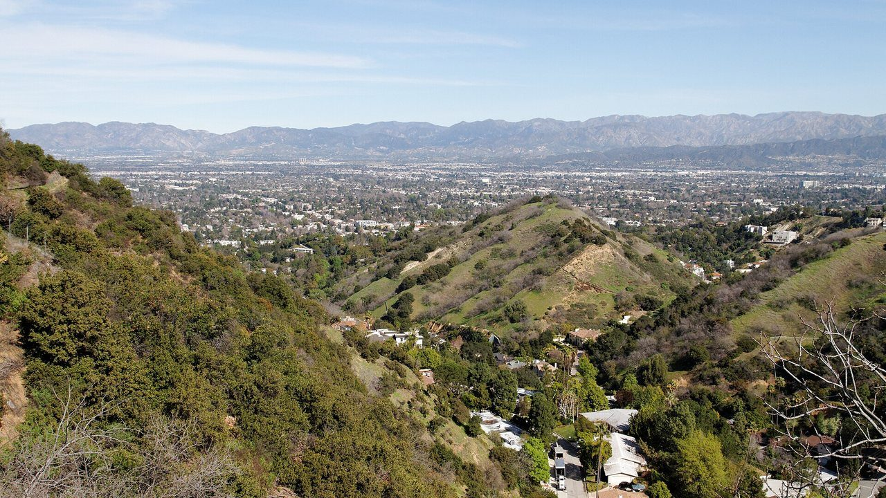

Race, Mulholland Drive

Behind
Best +0:01
371W
Target 418 W-47 W
- Cadence
- 87rpm
- Heart
- 140bpm
- Speed
- 26.5km/h
Work12 of 17
0:17
Next: · 3:00 at level 10
+2.3%
232 m climbed
12.06 km
24
Resistance / 32
Solo races your best-time ghost: position reads Ahead or Behind, and solo alone gets a Pause button. Frozen at 27:43.